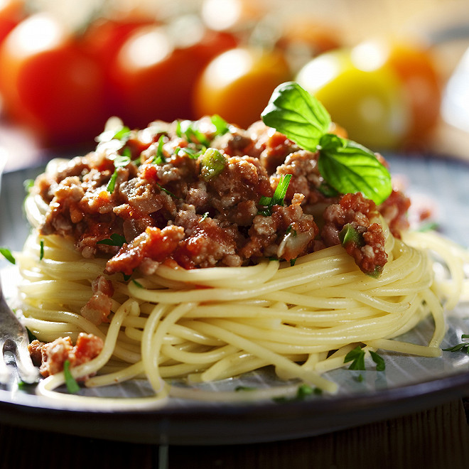

Spaghetti Bolognese

Description
Sometimes, the best choice is the simplest one. The utimate comfort food. An excellent recipe of pasta sauce with meat, lots of vegetables for a tons of flavor !
Prep Time :
10 mins
Cook Time :
1 hr 20 mins
Total Time :
1 hr 30 mins
Servings :
9
Ingredients
- 2 tablespoons olive oil
- 1 large onion, minced
- 4 slices bacon, cut into 1/2 inch pieces
- 1 clove garlic, minced
- 1 pound lean ground beef
- 1/2 pound ground pork
- 1 can italian plum tomatoes (1 can)
- 1/2 pound fresh mushrooms, sliced
- 6 ounces tomato sauce
- 2 carrots, shredded
- 1 stalk celery, chopped
- 1/2 cup dry white wine
- 1/2 cup chicken stock
- 1/2 teaspoon dried basil
- 1/2 teaspoon dried oregano
- salt and pepper to taste
- 1 pound pasta